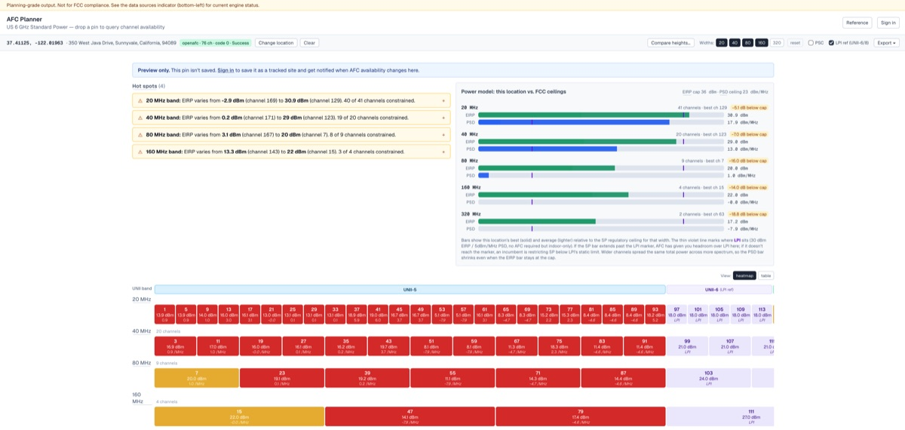

AFC Planner
By Chris Ross · Service Provider
6Ghz standard power operations and planning previously unavailable in an easy and/or free format. This will NOT replace an FCC approved solution for AFC. Purely for planning purposes.
Key features
- Map-based US 6 GHz Standard Power Wi-Fi spectrum planning and change detection.
- Query an AFC response by lat/lon location against the OpenAFC stack which utilizes the same underlying datasets as FCC approved operators.
- Email login via OTP for tracking changes over time per site
- MCP interface available for polling from your own agentic flows. (Currently gated, ask Chris for access if needed)
Featured in The RUCKUS Vibe, November 2026.